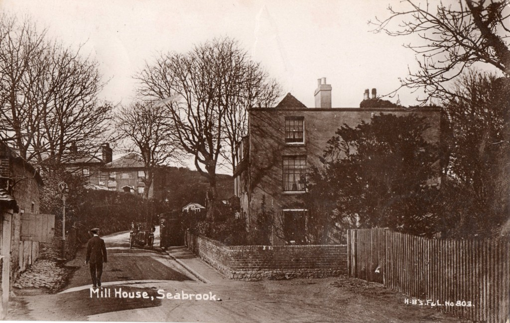

Historic Photos
Maps
Deal to Hythe


Hythe Map 1


Hythe Map 2


Hythe Map 3


Hythe Map 4


Coast Map


Seabrook Map 1

Seabrook Map 2


Seabrook Map 2
Seabrook

The Britannia

The Fountain

The Millhouse

St Martin's Plain

Benvenue


Royal Military Canal

1 Princes Parade


260 Seabrook Road

188 Seabrook Road

180 Seabrook Road

155 Seabrook Road


150 Seabrook Road

106 Seabrook Road


103 Seabrook Road

81 Seabrook Road - Seabrook House Bed and Breakfast

71 Seabrook Road

John James Jeal


Maps
Maps